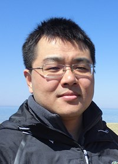
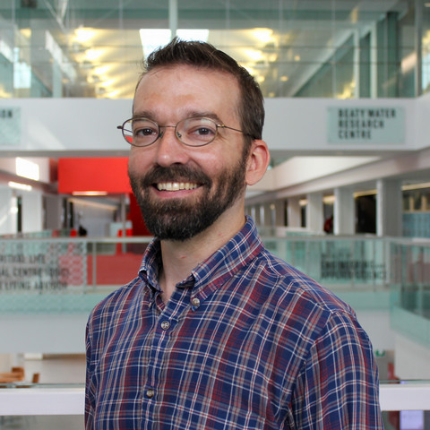

CSER 2024 Spring will be held on the campus of Queen's University, Kingston on June 10-11.
CSER meetings seek to motivate engaging discussions among faculty, graduate students and industry participants about software engineering research in a broad sense, as well as the intersection between software engineering, other areas of computer science, and other disciplines.
CSER brings together (primarily) Canadian-based software engineering researchers, including faculty, graduate students, industry participants, and any others who are interested.
| Deadline | |
|---|---|
| proposal submission | Friday, May 10, 2024, 11.59pm (EDT) |
| Acceptance announcement | Wednesday, May 15, 2024 |
| Early Registration | Wednesday, May 22, 2024 |
Abstract: Foundation Models (FM) and their powered systems (e.g.,ChatGPT and GitHub Copilot) have democratized access to a wide range of advanced technologies, so that average person can now complete various intricate tasks from poem writing to software development which only domain experts or field specialists could perform previously. However, due to the limitations of existing FM technologies, these systems suffer from a few serious drawbacks which limit their potential impact on border applicability. Instead of simply waiting for mature FM technologies, AI engineering researchers and practitioners must develop innovative engineering solutions to mitigate or resolve these issues. One promising direction is through agents, which are artificial entities capable of perceiving their surroundings using sensors, making decisions, and then taking actions in response using actuators. In this talk, I will present the various advances in the area of FM-powered agent-oriented software engineering and its associated challenges.
Bio: Zhen Ming (Jack) Jiang is an associate professor at the Department of Electrical Engineering and Computer Science, York University. Before his academic career, he previously worked with the Performance Engineering team at BlackBerry (RIM) where tools resulting from his research are currently used daily to monitor and debug the health of several ultra-large commercial software systems within BlackBerry. His current research interests lie in the intersection of AI and SE. He is one of the co-organizers for the Shonan meeting on “Foundation Models and Software Engineering: Challenges and Opportunities” as well as 2024 FM+SE Summit.
Abstract: Software developers spend a significant portion of the workday trying to understand and review the code changes of their teammates. Currently, most code reviewing and change comprehension is done using textual diff tools, such as the commit diff in GitHub or Gerrit. Such diff tools are insufficient, especially for complex changes, which move code within the same file or between different files. Abstract Syntax Tree (AST) diff tools brought several improvements in making easier the understanding of source code changes. However, they still have some constraints and limitations that affect negatively their accuracy. In this keynote, I will demonstrate these limitations using real case studies from open-source projects. At the same time, I will show how the AST diff generated by our tool addresses these limitations. Finally, I will introduce the Benchmark we created based on commits from the Defects4J and Refactoring Oracle datasets, and present the precision and recall of state-of-the-art AST diff tools on our benchmark. Vive la révolution!
Bio: Nikolaos Tsantalis is an Associate Professor in the Department of Computer Science and Software Engineering at Concordia University, Montreal, Canada. His research interests include software maintenance, software evolution, software design, empirical software engineering, refactoring recommendation systems, and refactoring mining. He has developed tools, such as the Design Pattern Detection tool, JDeodorant and RefactoringMiner, which are used by many practitioners, researchers, and educators. He has been awarded three Most Influential Paper awards at SANER 2018, SANER 2019 and CASCON 2023, two ACM SIGSOFT Distinguished Paper awards at FSE 2016 and ICSE 2017, two ACM Distinguished Artifact awards at FSE 2016 and OOPSLA 2017, and four Distinguished Reviewer Awards at MSR 2020, ICPC 2022, ASE 2022 and ICSME 2023. He served as the Program co-chair for ICSME 2021 and SCAM 2020. He currently serves on the Editorial Board of the IEEE Transactions on Software Engineering as Associate Editor. Finally, he is a Senior member of the IEEE and the ACM, and holds a license from the Association of Professional Engineers of Ontario (PEO).
Abstract: Software chatbots are used in many aspects of the software development process. These chatbots work alongside developers, providing assistance in various software development tasks, from answering development questions to running tests and controlling services. While there are numerous chatbots, and their capability of supporting software practitioners is encouraging, little is known about the development challenges and usage benefits of software engineering chatbots.
In this talk, I will present our in-depth study to understand the most pressing and difficult challenges faced by chatbot practitioners in developing chatbots. I will present our chatbot, MSRBot, that answers software development and maintenance questions.
Based on our studies, we have identified two critical challenges in chatbot development: selecting a Natural Language Understanding (NLU) platform for chatbot implementation and curating a high-quality dataset to train the NLU. To help developers create more efficient chatbots, we assess the performance of multiple widely used NLUs using representative software engineering tasks to guide chatbot developers in designing more efficient chatbots. Additionally, we propose approaches for augmenting software engineering chatbot datasets. Our work helps advance the state-of-the-art in the use of chatbots in software engineering.
Bio:Ahmad Abdellatif is an Assistant Professor in the Department of Electrical and Software Engineering at the University of Calgary. Before, he worked as a postdoctoral researcher at DASLab in the Department of Computer Science and Software Engineering at Concordia University. His research interests and expertise are in Software Engineering, with a special interest in Software Chatbots, Mining Software Repositories and Engineering AI-based Systems. His work has been published in top-ranked Software Engineering venues, such as IEEE Transactions on Software Engineering (TSE), the Empirical Software Engineering Journal (EMSE), the International Conference on Software Engineering (ICSE), and the International Conference on Mining Software Repositories (MSR). You can find more about him at: (https://aabdllatif.github.io/)
Abstract: Continuous integration is a DevOps practice in which software changes are frequently and automatically built, tested, and deployed. The primary objectives of continuous integration are to identify and address bugs quickly, and to improve software quality. However, the complexity of modern software systems and the lack of debugging information can make it challenging to locate and understand the root causes of bugs. In my upcoming talk, I will share my research insights into the challenges of automated debugging in DevOps and how they contribute to my broader goal of improving software quality and reliability. I will discuss how my past research, with a particular focus on developing new debugging innovations to minimize development and maintenance costs, has contributed to the field of automated debugging. Additionally, I will present my vision for the future of automated debugging in DevOps.
Bio:An Ran Chen is an Assistant Professor at the Electrical and Computer Engineering Department of University of Alberta. His research interests cover various software engineering topics, including automated debugging, software testing, mining software repositories, and DevOps practices. His work has been published in flagship journals and selected as the featured article for the TSE journal. He is also the co-chair of Testing and Tools track for IEEE International Conference on Software Testing, Verification and Validation (ICST) 2024. Prior to pursuing research, An Ran worked as a web and software developer at the Bank of Canada and McGill University. For more information, please visit his personal website at (https://anrchen.github.io/home/).
Abstract: Given a program P that exhibits a certain property ψ (e.g., a C program that crashes GCC when it is being compiled), the goal of program reduction is to minimize P to a smaller variant P ′ that still exhibits the same property, i.e., ψ (P ′). Program reduction is important and widely demanded for testing and debugging. For example, all compiler/interpreter development projects need effective program reduction to minimize failure-inducing test programs to ease debugging.
In this talk, I will present Perses, a novel framework for effective, efficient, and general program reduction. The key insight is to exploit, in a general manner, the formal syntax of the programs under reduction and ensure that each reduction step considers only promising, syntactically valid variants to avoid futile efforts on syntactically invalid variants.
Bio:Dr. Chengnian Sun is an Assistant Professor in the Cheriton School of Computer Science at the University of Waterloo. His primary research interests encompass the domains of software engineering and programming languages. His focused efforts involve the conceptualization and implementation of techniques, tools, and methodologies that contribute to the enhancement of software reliability and developers’ productivity. He has published more than 50 peer-reviewed papers at top-tier conferences and journals, such as ICSE, ASPLOS, PLDI, FSE and TOSEM.
These works have generated over 3700+ citations. Before joining UWaterloo, he was a full-time software engineer at Google Headquarters, working on Java/Android compiler toolchains and machine learning libraries for Google Search. Prior to Google, he spent three wonderful years as a postdoctoral fellow at the University of California, Davis, working on compiler validation techniques, which have detected 1600+ bugs in GCC and LLVM. He holds a Ph.D. in Computer Science from the National University of Singapore.
Abstract: Software ecosystems, such as npm, Maven, and PyPI, have completely changed how we develop software. By providing a platform of reusable libraries and packages, software ecosystems have enabled developers to write less code, increasing productivity and improving the quality of delivered software. However, this level of code reuse has created significant challenges in software maintenance: developers struggle to select well-maintained libraries among the myriad of options, dependency maintenance issues abound, and vulnerable dependencies are widespread, risking the integrity of delivered software.
In this talk, I will present the challenges of dependency management in the era of software ecosystems, how my past research has contributed to the field and my vision for a more transparent and proactive approach to dependency management.
Bio:Diego Elias Costa is an Assistant Professor in the CSSE department of Concordia University. Before that, he was an Assistant Professor in the Computer Science department at UQAM, Canada. He received his Ph.D. in Computer Science from Heidelberg University, Germany. His research interests cover a wide range of software engineering topics, including SE4AI, dependency management, performance testing, and software engineering bots. His work has been published in journals, such as IEEE TSE, EMSE, and TOSEM and at premier venues, such as ICSE, FSE, and ASE. You can find more about him at (https://diegoeliascosta.github.io/).
Abstract: Mining insights from the social and textual data in software engineering involves analyzing non-code elements like chat logs and GitHub collaboration patterns. These elements provide a window into team communication and collaboration dynamics, which could be crucial for the success of software projects.
The challenge lies in effectively analyzing and interpreting vast amounts of unstructured social and textual data to extract meaningful insights. In this talk, I will share insights from research into analyzing social and textual interactions in software engineering. The talk will explore how these interactions, when effectively analyzed, can uncover interesting insights in how software is developed and maintained. The presentation will also highlight ongoing and future research initiatives that aim to derive more knowledge from within this type of data, by leveraging the power of Large Language Models.
Bio:Dr. El Mezouar obtained a PhD in Computing from Queen's University in 2019, where she was a member of the Software Evolution and Analytics Lab. Prior to that, she completed her M.Sc. in Software Engineering at Al Akhawayn University in Morocco. She joined the Department of Mathematics and Computer Science at The Royal Military College as an assistant professor in 2022. The main research field of Dr. El Mezouar is Empirical Software Engineering. She uses methodologies such as machine learning, statistics and qualitative techniques to better understand the software development phenomena. She analyzes historical data (particularly textual data) using NLP techniques to provide approaches and techniques that can support software practitioners in the workplace.
Abstract: Individuals o2en develop so2ware based on their own cogni8ve preferences and perspec8ves. However, given the diverse ways in which people process informa8on, it becomes crucial to examine how we can effec8vely test and implement so2ware with inclusivity in mind. This presenta8on will delve into the rela8onship between inclusivity and technology, addressing two main ques8ons: What are inclusivity bugs? And how can we find and fix them in so2ware products? I will introduce a Why/Where/Fix systema8c inclusivity debugging process to help find inclusivity bugs (using the GenderMag cogni8ve walkthrough method), localize the Informa8on Architecture (IA) faults behind them, and then fix the IA to remove the inclusivity bugs found. Addi8onally, I will share insights from various teams using GenderMag to enhance inclusivity in their products and processes.
Bio:Dr. Mariam Guizani is an Assistant Professor in the Department of Electrical and Computer Engineering at Queen’s University. She holds a PhD and second MSc in Computer Science from Oregon State University and was a Fulbright fellowship recipient. She also holds a BSc and a MSc degree in So2ware Engineering. At the intersec8on of So2ware Engineering and Human-Computer Interac8on, her research centers around designing diversity and inclusion processes and tools for sustainable socio-technical ecosystems. More specifically, her research focuses on improving the state of diversity and inclusion in open-source so2ware (OSS). The broader impact of her work applies to academia, industry, and large OSS organiza8ons. Dr. Mariam Guizani has worked together with Google and the Apache So2ware Founda8on (ASF) for several years to inves8gate OSS projects’ experiences and implement ac8onable interven8ons. Her research at Microso2 Research was recognized by GitHub for its contribu8on to the currently deployed GitHub Discussion Dashboard, GitHub Blocks, and their future roadmap. She has also collaborated with founda8ons and departments such as Wikimedia, and Oregon State University IT department to empower communi8es to dismantle cogni8ve barriers in so2ware. Her research has been published at both ACM and IEEE conferences. Dr. Mariam Guizani has been invited to present her work at academic and industry venues including ICSE, CSCW, Google, GitHub, and the Linux Founda8on Open-Source Summit.
Abstract: Large language models (LLMs) have been increasingly adopted for Software Engineering (SE) tasks and showing better and better performance on benchmarks such as code generation and bug fixing. One common trend in the application of LLMs on SE tasks is to integrate pre-trained / fine-tuned models with program analysis techniques. Moreover, the adoption and evaluation of LLMs for SE tasks still face many challenges, e.g., the complex software development, evolution, and testing workflow in practice. In this talk, I will demonstrate how traditional program analysis techniques are used in the era of LLMs,with examples of my own work on LLM-based test completion (TeCo) and code comment co-evolution (CoditT5). Based on that, I will discuss the path forward for building more accurate, robust, and interpretable LLM-based solutions for SE.
Bio:Pengyu Nie is an Assistant Professor in the Cheriton School of Computer Science at the University of Waterloo. His research interest is improving developers' productivity during software development,testing and maintenance. Specific topics include execution-guided models for test completion and lemma naming, learning to evolve code and comments, and frameworks for maintaining executable comments and specifications.
Pengyu obtained his Ph.D. in 2023 and M.Sc. in 2020 from The University of Texas at Austin, advised by Milos Gligoric. He received his B.Sc. from University of Science and Technology of China (School of the Gifted Young) in 2017.
Abstract: Runtime monitoring is often deployed in high-criticality systems to catch incorrect behaviour before it can cause failures. Often, however, the operators of these systems are interested in more than a warning klaxon at the moment a fault presents itself. Monitors that calculate operational information for system comprehension have more utility than simple error detectors. This talk will explore some current thinking in the field of Runtime Verification around monitors that do more than report specification violations and some of the accompanying challenges. These challenges include specification formalisms, computational complexity, and information transmission.
Bio:Sean Kauffman is an Assistant Professor in the Department of Electrical and Computer Engineering at Queen's University. Before coming to Queen's, Sean obtained his Ph.D. in Electrical and Computer Engineering at the University of Waterloo and spent two years as a Postdoctoral Researcher at Aalborg University in Denmark. Sean came back to academia after spending more than ten years working in industry as a software engineer, where his last position was a principal software engineer for Oracle.
Sean's research focuses on safety-critical software and fits into the broad themes of Formal Methods, Runtime Verification, Anomaly Detection, and Explainable AI. He has collaborated on research with partners such as NASA's Jet Propulsion Laboratory, the Embedded Systems Institute, QNX, and Pratt and Whitney Canada. Sean's teaching philosophy focuses on fostering engagement, using techniques like active learning, productive failure, and peer instruction.
Abstract: Given either a specification written in natural language or an input program, automated program generation techniques produce a program according to the given specification or by modifying the input program. Automated program generation is a powerful technique that can be used for finding bugs in software systems that take programs as input or fixing bugs in the input programs. In this talk, I will share our latest results on automated program generation for (1) fixing bugs in large language model (LLM) based automated program generation, (1) testing static program analyzers. For the first part of the talk, I will present our study that categorizes common mistakes in LLM like Codex, and our insights in applying automated program repair techniques in fixing mistakes by Codex. For the second part of the talk, I will introduce several automated testing techniques that find bugs in static analyzers using semantic-preserving transformations, and annotation synthesizers.
Bio:Shin Hwei Tan is an Associate Professor (Gina Cody Research Chair) in Concordia University. Before moving to Concordia University, she was an Assistant Professor in Southern University of Science and Technology in Shenzhen, China. She obtained her PhD degree from National University of Singapore and her B.S (Hons) and MSc degree from UIUC, USA. Her main research interests are in automated program repair, software testing and open-source development. She is an Associate Editor for TOSEM and the Guest Editors in Chief for the New Frontier in Software Engineering track in TOSEM. She has also served as PCs for top-tier software engineering conferences, where she won 3 best reviewers award (FSE 2020, ASE 2020, ICSE 2022 NIER-track).
Abstract: The world is going mobile. Android has surpassed its counterparts and become the most popular operating system all over the world. The openness and fast evolution of Android are the key factors that lead to its rapid growth. However, these characteristics have also created the notorious problem: Android fragmentation. There are numerous different Android device models and operating system versions in use, making it difficult for app developers to exhaustively test their apps on these devices. An Android app can behave differently on the different device models, inducing various compatibility issues that reduce software reliability. Such fragmentation-induced compatibility issues (compatibility issues for short) have been well-recognized as a prominent problem in Android app development. In this talk, I will introduce the problem of Android compatibility issues, review the past efforts to address Android compatibility issues and discuss potential research opportunities surrounding Android compatibility issues.
Bio:Lili Wei is an assistant professor in the department of Electrical and Computer Engineering at McGill University. Prior to joining McGill University, she received her Ph.D. degree and worked as a post-doctoral fellow at the Hong Kong University of Science and Technology. Her research interests lie in program analysis and testing with a focus on mobile apps, smart contracts and IoT software. Her research outcomes were recognized by several awards, including an ACM SIGSOFT Distinguished Paper Award, an ACM SIGSOFT Distinguished Artifact award, a Google PhD Fellowship and a Microsoft Research Asia PhD Fellowship. She is also actively serving the software engineering research community. She received a Distinguished Reviewer Award from ASE 2022. More information can be found on her personal website:https://liliweise.github.io
Topics on Foundation Models for Software Engineering

list of the presenters:
Abstract: Software chatbots are used in many aspects of the software development process. These chatbots work alongside developers, providing assistance in various software development tasks, from answering development questions to running tests and controlling services. While there are numerous chatbots, and their capability of supporting software practitioners is encouraging, little is known about the development challenges and usage benefits of software engineering chatbots.
In this talk, I will present our in-depth study to understand the most pressing and difficult challenges faced by chatbot practitioners in developing chatbots. I will present our chatbot, MSRBot, that answers software development and maintenance questions.
Based on our studies, we have identified two critical challenges in chatbot development: selecting a Natural Language Understanding (NLU) platform for chatbot implementation and curating a high-quality dataset to train the NLU. To help developers create more efficient chatbots, we assess the performance of multiple widely used NLUs using representative software engineering tasks to guide chatbot developers in designing more efficient chatbots. Additionally, we propose approaches for augmenting software engineering chatbot datasets. Our work helps advance the state-of-the-art in the use of chatbots in software engineering.
Bio:Ahmad Abdellatif is an Assistant Professor in the Department of Electrical and Software Engineering at the University of Calgary. Before, he worked as a postdoctoral researcher at DASLab in the Department of Computer Science and Software Engineering at Concordia University. His research interests and expertise are in Software Engineering, with a special interest in Software Chatbots, Mining Software Repositories and Engineering AI-based Systems. His work has been published in top-ranked Software Engineering venues, such as IEEE Transactions on Software Engineering (TSE), the Empirical Software Engineering Journal (EMSE), the International Conference on Software Engineering (ICSE), and the International Conference on Mining Software Repositories (MSR). You can find more about him at: (https://aabdllatif.github.io/)
Abstract: The rapid progress of AI-powered programming assistants, such as GitHub Copilot, has facilitated the development of software applications. These assistants rely on large language models (LLMs), which are foundation models (FMs) that support a wide range of tasks related to understanding and generating language. LLMs have demonstrated their ability to express UML model specifications using formal languages like the Object Constraint Language (OCL). However, the context size of the prompt is limited by the number of tokens an LLM can process. This limitation becomes significant as the size of UML class models increases. In this study, we introduce PathOCL, a novel path-based prompt augmentation technique designed to facilitate OCL generation. PathOCL addresses the limitations of LLMs, specifically their token processing limit and the challenges posed by large UML class models. PathOCL is based on the concept of chunking, which selectively augments the prompts with a subset of UML classes relevant to the English specification. Our findings demonstrate that PathOCL, compared to augmenting the complete UML class model (UML-Augmentation), generates a higher number of valid and correct OCL constraints using the GPT-4 model. Moreover, the average prompt size crafted using PathOCL significantly decreases when scaling the size of the UML class models.
Abstract: The exponential growth of the mobile app market underscores the importance of constant innovation. User satisfaction is paramount, and developers rely on user reviews and industry trends to identify areas for improvement. However, the sheer volume of reviews poses challenges in manual analysis, necessitating automated approaches. Existing automated approaches either analyze only a target app’s reviews, neglecting valuable insights from competitors or fail to provide actionable feature enhancement suggestions. To address these gaps, we propose LLM-CURE (LLM-based Competitive User Review Analysis for Feature Enhancement), a novel approach powered by a large language model (LLM) to automatically generate suggestions for mobile app feature improvements by leveraging insights from the competitive landscape. LLM-CURE operates in two phases. First, it identifies and categorizes user complaints within reviews into high-level features using its LLM capabilities. Second, for each complaint, LLM-CURE analyzes highly rated features in competing apps and proposes potential improvements specific to the target application. We evaluate LLM-CURE on 70 popular Android apps. Our evaluation demonstrates that LLM-CURE outperforms baselines in assigning features to reviews and highlights its effectiveness in utilizing user feedback and competitive analysis to guide feature enhancement strategies.
Abstract: A large body of research proposed machine learning-based solutions to suggest where to insert logging statements. However, before answering the question ``where to log?’’, practitioners first need to determine whether a file needs logging at the first place. To address this question, we characterize the log density (i.e., ratio of log lines over the total LOC) through an empirical study in seven open-source software projects. Then, we propose a deep learning based approach to predict the log density based on syntactic and semantic features of the source code. We also evaluate the consistency of our model over time and investigate the problem of concept drift. Our log density models achieve an average accuracy of 84%, which is consistent across different projects and over time. However, the performances can significantly drop when a model is trained on data from one time period and tested on datasets from different time periods.
Abstract: Large-scale code reuse significantly reduces both development costs and time. However, the massive share of third-party code in software projects poses new challenges, especially in terms of maintenance and security. In this paper, we propose a novel technique to specialize dependencies of Java projects, based on their actual usage. Given a project and its dependencies, we systematically identify the subset of each dependency that is necessary to build the project, and we remove the rest. As a result of this process, we package each specialized dependency in a JAR file. Then, we generate specialized dependency trees where the original dependencies are replaced by the specialized versions. This allows building the project with significantly less third-party code than the original. As a result, the specialized dependencies become a first-class concept in the software supply chain, rather than a transient artifact in an optimizing compiler toolchain. We implement our technique in a tool called DepTrim , which we evaluate with 30 notable open-source Java projects. DepTrim specializes a total of 343 (86.6%) dependencies across these projects, and successfully rebuilds each project with a specialized dependency tree. Moreover, through this specialization, DepTrim removes a total of 57,444 (42.2%) classes from the dependencies, reducing the ratio of dependency classes to project classes from 8.7 × in the original projects to 5.0 × after specialization. These novel results indicate that dependency specialization significantly reduces the share of third-party code in Java projects.
Abstract: Data quality is crucial in the field of software analytics, especially for machine learning (ML) applications such as software defect prediction (SDP). Despite the extensive use of ML models in software engineering, studies have primarily focused on singular antipatterns, while a multitude of antipatterns exist in practice. This comprehensive setting is often ignored and remains out of focus. This study aims to develop a comprehensive taxonomy of data quality antipatterns specific to ML and evaluate their impact on the performance and interpretation of software analytics models. We identified eight ML-specific data quality antipatterns and 14 sub-types through a literature review. We conducted a series of experiments to determine the prevalence of data quality antipatterns in SDP data (RQ1), assess the impact of cleaning orders on model performance (RQ2), evaluate the effects of antipattern removal on model performance (RQ3), and examine the consistency of interpretation results from models built with different antipatterns (RQ4). Our taxonomy includes antipatterns such as Schema Violations, Data Miscoding, Inconsistent Representation, Data Distribution Antipatterns, Packaging Antipatterns, Label Antipatterns, and Correlation & Redundancy. In our case study of SDP, we found that the studied datasets contain several antipatterns, which often co-exist. The impact of learner variability on the model performance is higher than the impact of order of cleaning these antipatterns. However, in a setting where the other antipatterns have been cleaned out, some antipatterns, such as Tailed Distributions and Class Overlap, have a significant effect on certain performance metrics. Finally, models built from data with different antipatterns showed moderate consistency in interpretation results. This study provides empirical evidence on the critical role of data quality in ML for software analytics. Our findings indicate that while the order of data cleaning has a minor impact, practitioners should be vigilant in addressing specific antipatterns, especially when other antipatterns have already been cleaned. Researchers and practitioners should also consider the "data quality" aspect when relying on model interpretation results. Prioritizing the removal of key antipatterns should take precedence over the removal of all antipatterns to maintain the performance of ML models in software defect prediction.
Abstract: In this presentation, we will discuss our efforts to enhance the textual information in logging statements from two perspectives. Firstly, we will explore proactive methods for suggesting the generation of new logging texts. We propose automated deep learning-based approaches that generate logging texts by translating related source code into concise textual descriptions. Secondly, we will talk about retroactive analysis of existing logging texts. We present the first comprehensive study on the temporal relations between logging and its corresponding source code, which is subsequently utilized to successfully detect anti-patterns in existing logging statements.
Abstract: Most studies investigating refactoring practices in test code either considered refactorings typically applied on production code, e.g., from Martin Fowler’s Refactoring book, or a narrow test-refactoring context, e.g., test-smells. To fill this gap and consolidate an empirically validated comprehensive catalogue of test-specific refactorings, we employ a mixed-method approach combining different sources of information, including existing test evolution datasets, answers to survey questions by contributors of popular open-source GitHub repositories, and StackOverflow test-refactoring-related questions and answers. We present evidence that refactoring activities take place in specific test code components and address different quality aspects of tests, such as maintainability, reusability, extensibility, reliability, performance, and flakiness. Our study paves the way for tool builders to add support for test features in static analysis and code generation tools. Moreover, it establishes a catalogue of test-specific refactorings to aid practitioners in maintaining large test-code bases and researchers in conducting empirical studies on test evolution.
Abstract: Developers often need to replace the used libraries with alternate libraries, a process known as library migration. Doing this manually can be tedious, time-consuming, and prone to errors. Automated migration techniques can help alleviate some of this burden. However, designing effective automated migration techniques requires understanding the types of code changes required during migration. This work contributes an empirical study that provides a holistic view of Python library migrations. We manually label the state-of-the-art migration data and derive a taxonomy for describing migration-related code changes, PyMigTax. Leveraging PyMigTax and our labeled data, we investigate various characteristics of Python library migrations. Our findings highlight various potential shortcomings of current library migration tools. Overall, our contributions provide the necessary knowledge and foundations for developing automated Python library migration techniques.
Abstract: Technical question and answering (Q&A) sites such as Stack Overflow have become an important source for software developers to seek knowledge. However, code snippets on Q&A sites are usually uncompilable and semantically incomplete for compilation due to unresolved types and missing dependent libraries, which raises the obstacle for users to reuse or analyze Q&A code snippets. Prior approaches either are not designed for synthesizing compilable code or suffer from a low compilation success rate. To address this problem, we propose ZS4C, a lightweight approach to perform zero-shot synthesis of compilable code from incomplete code snippets using Large Language Model (LLM). ZS4C operates in two stages. In the first stage, ZS4C utilizes an LLM, i.e., ChatGPT, to identify missing import statements for a given code snippet, leveraging our designed task-specific prompt template. In the second stage, ZS4C fixes compilation errors caused by incorrect import statements and syntax errors through collaborative work between ChatGPT and a compiler. We thoroughly evaluated ZS4C on a widely used benchmark called StatType-SO against the SOTA approach SnR. Compared with SnR, ZS4C improves the compilation rate from 63% to 87.6%, with a 39.3% improvement. On average, ZS4C can infer more accurate import statements than SnR, with an improvement of 6.6% in the F1.
Abstract: Inheritance, a fundamental aspect of object-oriented design, has been leveraged to enhance code reuse and facilitate efficient software development. However, alongside its benefits, inheritance can introduce tight coupling and complex relationships between classes, posing challenges for software maintenance. Although there are many studies on inheritance in source code, there is limited study on the test code counterpart. In this paper, we take the first step by studying inheritance in test code, with a focus on redundant test executions caused by inherited test cases. We empirically study the prevalence of test inheritance and its characteristics. We also propose a hybrid approach that combines static and dynamic analysis to identify and locate inheritance-induced redundant test cases. Our findings reveal that (1) inheritance is widely utilized in the test code, (2) inheritance-induced redundant test executions are prevalent, accounting for 13% of all execution test cases, and (3) the redundancies slow down test execution by an average of 14%. Our study highlights the need for careful refactoring decisions to minimize redundant test cases and identifies the need for further research on test code quality
Abstract: Software process models are pivotal in fostering collaboration and communication within software teams. We introduce LCG, which leverages multiple LLM agents to emulate various software process models, namely LCGWaterfall, LCGTDD, and LCGScrum. Each model assigns LLM agents specific roles such as requirement engineer, architect, developer, tester, and scrum master, mirroring typical development activities and communication patterns. Utilizing GPT3.5 as the underlying LLM and baseline (GPT), we evaluate LCG across four code generation benchmarks: HumanEval, HumanEval-ET, MBPP, and MBPP-ET. Results indicate LCGScrum outperforms other models, achieving an average 15% improvement over GPT. Analysis reveals distinct impacts of development activities on generated code, with design and code reviews contributing to enhanced exception handling, while design, testing, and code reviews mitigate code smells. Furthermore, variations in Pass@1 are notable for different GPT3.5 model versions, highlighting the stability of LCG across model versions. This stability underscores the importance of adopting software process models .
Abstract: With the increasing popularity of machine learning (ML), many open-source software (OSS) contributors are attracted to developing and adopting ML approaches. Comprehensive understanding of ML contributors is crucial for successful ML OSS development and maintenance. Without such knowledge, there is a risk of inefficient resource allocation and hindered collaboration in ML OSS projects. Existing research focuses on understanding the difficulties and challenges perceived by ML contributors by user surveys. There is a lack of understanding of ML contributors based on their activities tracked from software repositories. In this paper, we aim to understand ML contributors by identifying contributor profiles in ML libraries. We further study contributors’ OSS engagement from three aspects: workload composition, work preferences, and technical importance. By investigating 7,640 contributors from 6 popular ML libraries (TensorFlow, PyTorch, Keras, MXNet, Theano, and ONNX), we identify four contributor profiles: Core-Afterhour, Core-Workhour, Peripheral-Afterhour, and Peripheral-Workhour. We find that: 1) project experience, authored files, collaborations, and geological location are significant features of all profiles; 2) contributors in Core profiles exhibit significantly different OSS engagement compared to Peripheral profiles; 3) contributors’ work preferences and workload compositions significantly impact project popularity; 4) long-term contributors evolve towards making fewer, constant, balanced and less technical contributions.
Abstract: In this work, we performed a case study on three large-scale public operation data and empirically assessed five different types of model update strategies for supervised learning regarding their performance, updating cost, and stability. We observed that active model update strategies (e.g., periodical retraining, concept drift guided retraining, time-based model ensembles, and online learning) achieve better and more stable performance than a stationary model.
Abstract: Currently, there is a paucity of research on predicting the execution time of quantum circuits on quantum computers. The execution time estimates provided by the IBM Quantum Platform have large margins of error and do not satisfactorily meet the needs of researchers in the field of quantum computing. We selected a dataset comprising over 1510 quantum circuits, initially predicting their execution times on simulators, which yielded promising results with an R-squared value nearing 95%. Subsequently, for the estimation of execution times on quantum computers, we conducted ten-fold cross-validation with an average R-squared value exceeding 90%. These results significantly surpass those provided by the IBM Quantum Platform. Our model has proven to be effective in accurately estimating execution times for quantum circuits on quantum computer.
Abstract: Logs are important in modern software development with runtime information. Log parsing is the first step in many log-based analyses, that involve extracting structured information from unstructured log data. Traditional log parsers face challenges in accurately parsing logs due to the diversity of log formats, which directly impacts the performance of downstream log-analysis tasks. In this paper, we explore the potential of using Large Language Models (LLMs) for log parsing and propose LLMParser, an LLM-based log parser based on generative LLMs and few-shot tuning. We leverage four LLMs, Flan-T5-small, Flan-T5-base, LLaMA-7B, and ChatGLM-6B in LLMParsers. Our evaluation of 16 open-source systems shows that LLMParser achieves statistically significantly higher parsing accuracy than state-of-the-art parsers (a 96% average parsing accuracy). We further conduct a comprehensive empirical analysis on the effect of training size, model size, and pre-training LLM on log parsing accuracy. We find that smaller LLMs may be more effective than more complex LLMs; for instance where Flan-T5-base achieves comparable results as LLaMA-7B with a shorter inference time. We also find that using LLMs pre-trained using logs from other systems does not always improve parsing accuracy. While using pre-trained Flan-T5-base shows an improvement in accuracy, pre-trained LLaMA results in a decrease (decrease by almost 55% in group accuracy). In short, our study provides empirical evidence for using LLMs for log parsing and highlights the limitations and future research direction of LLM-based log parsers.
Abstract: Large language models (LLMs) have seen increased use in various software tasks, such as code generation, code summarization, and program repair. Among these tasks code generation has been most studied so far with significant results. The state-of-the-art approach for LLM-based code generation is using an iterative process (either simple iterations or more smarter agents, e.g., reinforcement learning agents) and provide a feedback to LLM when the results are not satisfactory. The feedback can be as simple as whether the test cases for the code pass, or more extensive such as including execution traces of failed tests or ASTs of the code in the prompt. While effective, these methods can be prohibitively expensive in terms of both time and monetary cost due to the frequent calls to LLMs and large prompts (many tokens to incorporate feedbacks). In this work, we propose a Cost-Effective Search-Based Prompt Engineering (CE-SBPE) approach, which leverages an Evolutionary Algorithm to guide the iterative process of prompt optimization toward the most effective prompts, while minimizing the use of expensive LLMs in the loop. Our approach provides similar and sometime better accuracy compared to baselines with only a small portion of their costs.
Abstract: Refactoring enhances software quality without altering its functional behaviors. Understanding the refactoring activities of developers is crucial to improving software maintainability. With the increasing use of machine learning (ML) libraries and frameworks, maximizing their maintainability is crucial. Due to the data-driven nature of ML projects, they often undergo different refactoring operations (e.g., data manipulation), for which existing refactoring tools lack ML-specific detection capabilities. Furthermore, a large number of ML libraries are written in Python, which has limited tools for refactoring detection. PyRef, a rule-based and state-of-the-art tool for Python refactoring detection, can identify 11 types of refactoring operations. In comparison, Rminer can detect 99 types of refactoring for Java projects. We introduce MLRefScanner, a prototype tool that applies machine-learning techniques to detect refactoring commits in ML Python projects. MLRefScanner identifies commits with both ML-specific and general refactoring operations. Evaluating MLRefScanner on 199 ML projects demonstrates its superior performance compared to state-of-the-art approaches, achieving an overall 94% precision and 82% recall. Combining it with PyRef further boosts performance to 95% precision and 99% recall. Our study highlights the potential of ML-driven approaches in detecting refactoring across diverse programming languages and technical domains, addressing the limitations of rule-based detection methods.
Abstract: During code reviews, an essential step in software quality assurance, reviewers have the difficult task of understanding and evaluating code changes to validate their quality and prevent introducing faults to the codebase. This is a tedious process where the effort needed is highly dependent on the code submitted, as well as the author’s and the reviewer’s experience, leading to median wait times for review feedback of 15-64 hours. Through an initial user study carried with 29 experts, we found that re-ordering the files changed by a patch within the review environment has potential to improve review quality, as more comments are written (+23%), and participants’ file-level hot-spot precision and recall increases to 53% (+13%) and 28% (+8%), respectively, compared to the alphanumeric ordering. Hence, this work aims to help code reviewers by predicting which files in a submitted patch need to be (1) commented, (2) revised, or (3) are hot-spots (commented or revised). To predict these tasks, we evaluate two different types of text embeddings (i.e., Bag-of-Words and Large Language Models encoding) and review process features (i.e., code size-based and history-based features). Our empirical study on three open-source and two industrial datasets shows that combining the code embedding and review process features leads to better results than the state-of-the-art approach. For all tasks, F1-scores (median of 40-62%) are significantly better than the state-of-the-art (from +1 to +9%).
Abstract: Data quality is vital for user experience in products reliant on data. As solutions for data quality problems. However, although some of the existing taxonomies are near-comprehensive, the over-complexity has limited their actionability in data issue solution development. Hence, recent researchers issued new sets of data issue categories that are more concise for better usability. Although more concise, labels over-catering to the solution systems may sometimes cause the taxonomy to be not mutually exclusive. Consequently, different categories sometimes overlap in determining the issue types. This hinders solution development and confounds issue detection. Therefore, based on observations from a literature review and feedback from our industry partner, we propose a comprehensive taxonomy of data quality issues. Our work aims to address a widely generalizable taxonomy rule in modern data quality issue engineering and helps practitioners and researchers understand their data issues and estimate the efforts required for issue fixing.
Abstract: Automatic software fault localization plays an important role in software quality assurance by pinpointing faulty locations for easier debugging. Coverage-based fault localization, a widely used technique, employs statistics on coverage spectra to rank code based on suspiciousness scores. However, the rigidity of statistical approaches calls for learning-based techniques. Amongst all, Grace, a graph-neural network (GNN) based technique has achieved state-of-the-art due to its capacity to preserve coverage spectra, i.e., test-to-source coverage relationships, as precise abstract syntax-enhanced graph representation, mitigating the limitation of other learning-based technique which compresses the feature representation. However, such representation struggles with scalability due to the increasing complexity of software and associated coverage spectra and AST graphs. In this work, we proposed a new graph representation, DepGraph, that reduces the complexity of the graph representation by 70% in nodes and edges by integrating interprocedural call graph in the graph representation of the code. Moreover, we integrate additional features such as code change information in the graph as attributes so the model can leverage rich historical project data. We evaluate DepGraph using Defects4j 2.0.0, and it outperforms Grace by locating 20% more faults in Top-1 and improving the Mean First Rank (MFR) and the Mean Average Rank (MAR) by over 50% while decreasing GPU memory usage by 44% and training/inference time by 85%. Additionally, in cross-project settings, DepGraph surpasses the state-of-the-art baseline with a 42% higher Top-1 accuracy, and 68% and 65% improvement in MFR and MAR, respectively. Our study demonstrates DepGraph's robustness, achieving state-of-the-art accuracy and scalability for future extension and adoption.
Abstract: This paper explores the use of Large Language Models (LLMs), i.e. GPT-4 for Automated Software Engineering (ASE) tasks, comparing prompt engineering and fine-tuning approaches. Three prompt engineering techniques (basic prompting, in-context learning, and task-specific prompting) were evaluated against 18 fine-tuned models on code generation, code summarization, and code translation tasks. We found that GPT-4, even with the best prompting strategy, could not significantly outperform older/smaller fine-tuned models across all tasks. To qualitatively assess GPT-4 with different prompting strategies, we conducted a user study with 27 graduate students and 10 industry practitioners. We categorize different prompts used by the participants to show the trends and their effectiveness on each task. From our qualitative analysis, we find that the GPT-4 with conversational prompts (i.e. when a human provides feedback back and forth with models to achieve the best results) showed drastic improvement compared to GPT-4 with automatic prompting strategies.
Abstract: Machine Learning (ML) decision-making involves complex tradeoffs across various design stages, involving diverse strategic actors with evolving interests. This paper investigates the distribution of Responsible AI decisions and tradeoffs along different ML process stages and how they are made by different people. We model design decision points to identify conflict areas and include Strategic Actors in our modeling to understand their involvement and strategic interests. Our approach examines tradeoffs at the task refinement, goal refinement, and business design decision points, revealing how operationalization-level tradeoffs impact business-level decisions. By recognizing the strategic actors and their interests at each stage, we can better navigate ML design tradeoffs and conflicts, ensuring more effective and aligned decision-making. This research contributes to the understanding of ML design decision-making, supporting the development of more efficient and responsible AI systems.
Abstract: Developers often use configuration parameters to customize the behavior of software, ensuring it meets specific performance requirements or adapts to various deployment contexts. However, misconfigurations in software systems are common and can lead to performance degradation. Typically, developers need to conduct numerous performance tests to identify performance-sensitive parameters that significantly impact system performance. More specifically, developers need to manually adjust configuration values and monitor the corresponding changes in performance metrics, such as throughput, to measure the performance variations. In this paper, we propose SensitiveTeeth, a novel LLM agent-based approach for identifying performance-sensitive configurations, which utilizes static code analysis and LLM agent-based analysis to study the performance-sensitive configurations. Our evaluation of seven open-source systems demonstrates that our tool achieves higher accuracy in identifying performance-sensitive configurations and smaller performance overhead than other state-of-the-art approaches. SensitiveTeeth provides future research direction for LLM-based performance analysis of configurations.
Abstract: Log management tools such as ELK Stack and Splunk are widely adopted to manage and leverage log data in order to assist DevOps in real-time log analytics and decision making. To enable fast queries and to save storage space, such tools split log data into small blocks (e.g., 16KB), then index and compress each block separately. Previous log compression studies focus on improving the compression of either large-sized log files or log streams, without considering improving the compression of small log blocks (the actual compression need by modern log management tools). Hence, we propose an approach named LogBlock to preprocess small log blocks before compressing them with a general compressor. Our evaluation on 16 log files shows that LogBlock improves the compression ratio of small log blocks of different sizes by a median of 5% to 21% as compared to direct compression without preprocessing (outperforming the state-of-the-art compression approaches).
Talk, poster and demo submissions are welcome from across the field of software engineering. Continuing the scope of prior editions, CSER encourages submissions focusing on software engineering challenges related to developing, maintaining, and operating complex software systems (e.g., Micro-services, FM/AI-based systems, ultra-large-scale systems, intelligent cyber-physical systems), as well as to the novel and emerging engineering methods, techniques and processes underneath such systems (e.g., FM/LLMs, AI, Blockchain, Quantum Computing, Data Extended Reality).
We invite you to contribute by sending your proposals for:
Acceptance announcement:
Monday, May 13, 2024.
You can follow the link below to register your ticket.
| Early Birds (By May 22th) | Regular ( After May 22th) | |
|---|---|---|
| Students | $220 (plus taxes) | $270 (plus taxes) |
| Non students | $320 (plus taxes) | $370 (plus taxes) |
If a CSER participant would like to attend SEMLA 2024 (Montreal, June 12-13, https://semla.polymtl.ca/), a promo code for attending SEMLA is:
CSER-2024S
(30% off for all ticket types)